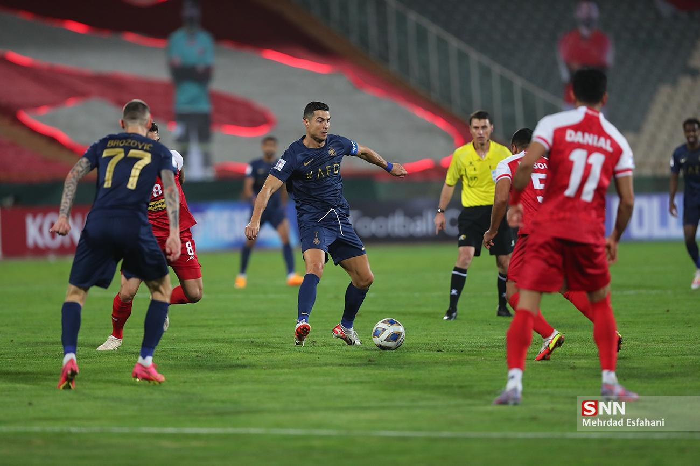
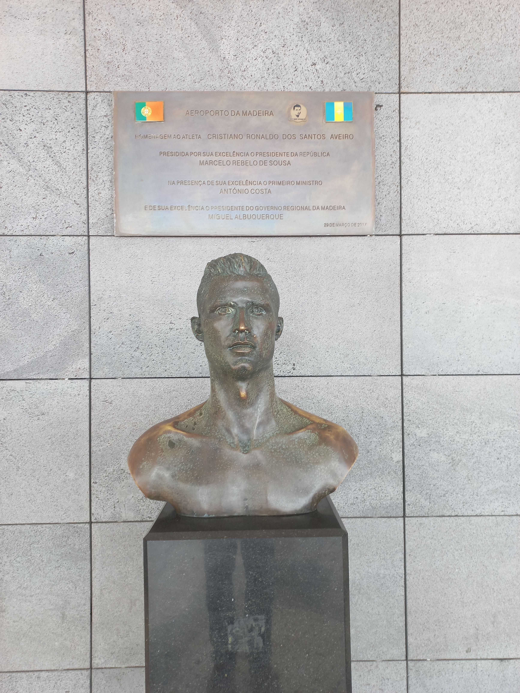
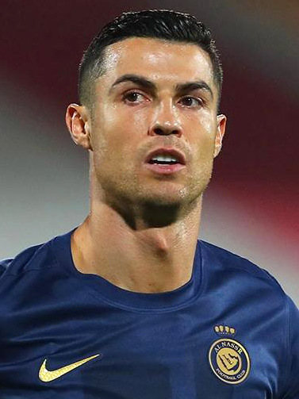

Sélection


Instantanés de carrière
Une petite sélection de photos, toutes sous licence libre (Creative Commons) provenant de Wikimedia Commons.
Al Nassr FC vs Persepolis — septembre 2023
Portrait — 2023

En action — 2023
Sur le terrain — 2023

Statue à l'aéroport de Funchal, Madère

Portrait — 2023
Toutes les photos proviennent de Wikimedia Commons
et sont utilisées sous licence Creative Commons, avec attribution aux photographes d'origine.
Ce ne sont que des images d'exemple : remplacez-les librement par vos propres visuels.